Code
pharma.yearly = aggregate(pharma.ts, nfrequency = 12, FUN=mean)
pharma.yearly.ts = ts(pharma.yearly, start = c(2007), end = c(2020), frequency = 1)There is a wealth of news coverage and information criticizing the connection between spikes in drug prices and pharmaceutical company profits. In this Kaiser Family Foundation article, for example, the authors discuss that the unregulated nature of drug pricing and wildly increasing pharmaceutical company profits has made its way to U.S. Congress multiple times, with lawmakers highlighting how these companies manage to rake in billions of dollars in profit each year at the expense of patients who need life-saving medicine, and that currently no laws exist to force these companies to adhere to price ceilings or other methods of price control.
In this project, my big picture, ultimate goal is to draw a connection between the increased profitability of the U.S. pharmaceutical industry and rising out-of-pocket prescription drug costs for consumers. In the previous tab of the this project that analyzed ARIMA and SARIMA modeling, I performed different modeling techniques on three different data sets to begin to draw different insights:
Performance of the IHE U.S. pharmaceutical companies ETF
Out-of-pocket prescription drug costs for consumers in the U.S.
Weekly influenza deaths in the U.s.
Although the weekly influenza deaths data set added an interesting seasonal component to this analysis in the context of a relatively high-cost prescription drug used to treat an extremely common, contagious disease, I believe this aspect serves as more of an addendum to the points I hope to make with the other two data sets.
Because I believe there exists interdependence between pharmaceutical ETF performance, which I argue indicates profitability of the market, and out-of-pocket prescription drug costs, I want to use VAR (Vector Autoregression) modeling to analyze the relationship between these two unique time series data sets. The reason for this is that VAR models assume there exists some kind of dependent behavior between multiple time series variables. I believe this will allow for interesting insights to be drawn that can quantitatively codify this relationship.
To start, I want to plot the two time series together to get a better idea of how they have changed over time. Because we have more historical data on the changing cost of prescription drug prices, I will apply windows to the data to ensure they match up. Additionally, because the pharmaceutical stock data is monthly rather than yearly, I will take an average for each year to ensure modeling can be performed.
pharma.yearly = aggregate(pharma.ts, nfrequency = 12, FUN=mean)
pharma.yearly.ts = ts(pharma.yearly, start = c(2007), end = c(2020), frequency = 1)drug.window.ts = window(drug.ts, start=c(2007))Although the full plot of out-of-pocket drug costs has increased over time, there is more up and down variation in this window, meaning that it will be interesting to see if, based on the data available for this window alone, there exists some relationship between these two time series that can be quantified through modeling.
plot(pharma.yearly.ts, main = "U.S. Pharmaceutical ETF (2007-2020)", xlab = "", ylab = "")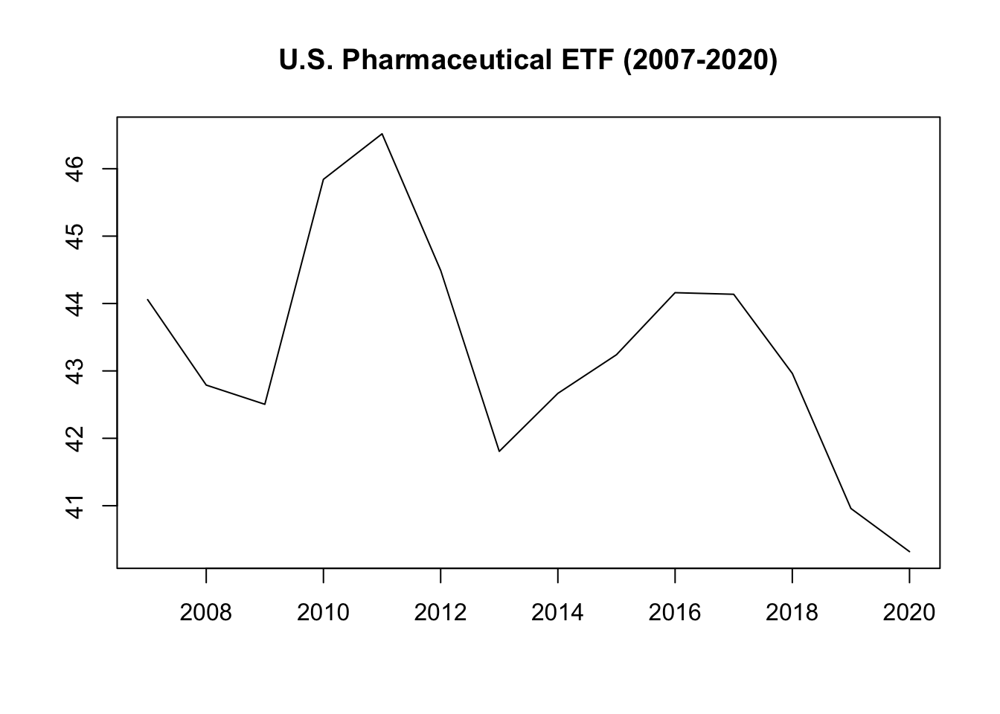
plot(drug.window.ts, main = "Out-of-Pocket Prescription Drug Costs (2007-2020)", xlab = "", ylab = "")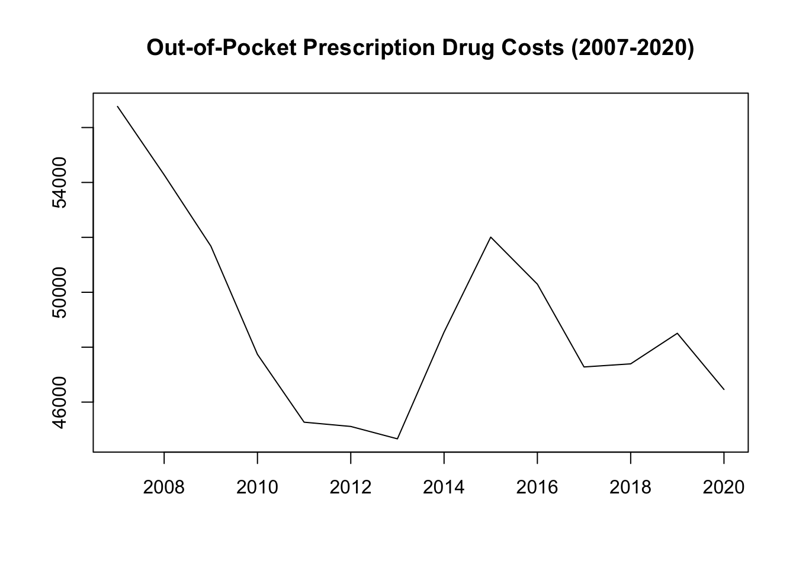
When looking at their paired relationship:
pairs(cbind(Pharma = pharma.yearly.ts, Drug = drug.window.ts))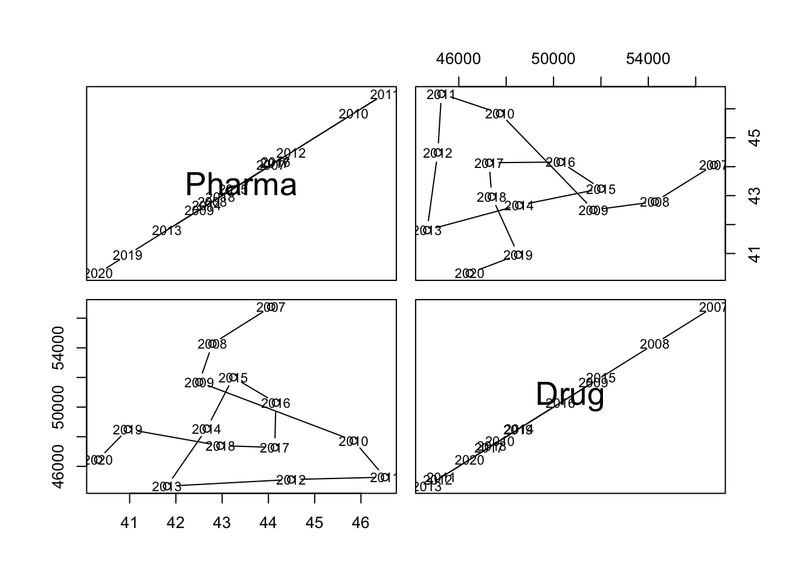
Now, we can combine the two time series together into one for analysis using cbind().
ts.combo = cbind(pharma.yearly.ts, drug.window.ts)
plot.ts(ts.combo, main = "", xlab = "Year", ylab = "")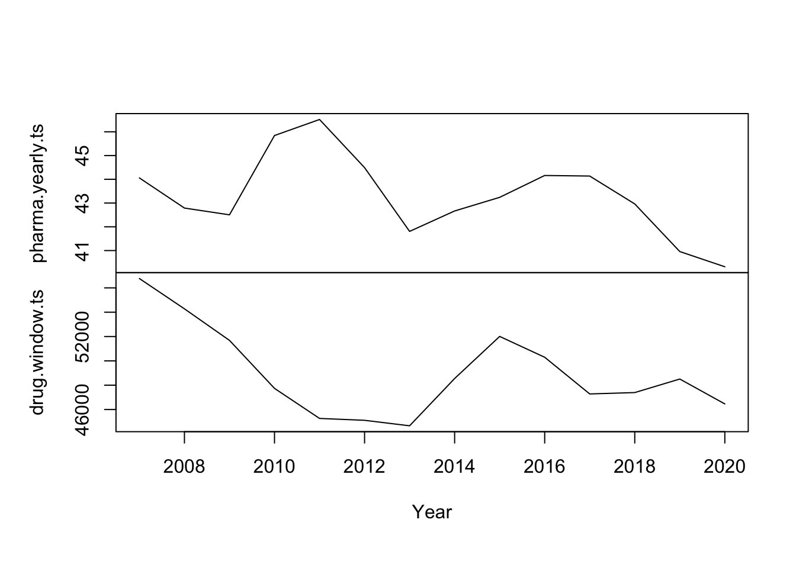
First, let me take another look at the ACF and PACF for my yearly pharmaceutical ETF data and my out-of-pocket drug cost data.
par(mar=c(5,4,3,2)+0.1)
acf(pharma.yearly.ts, main = "ACF for Yearly Pharma ETF")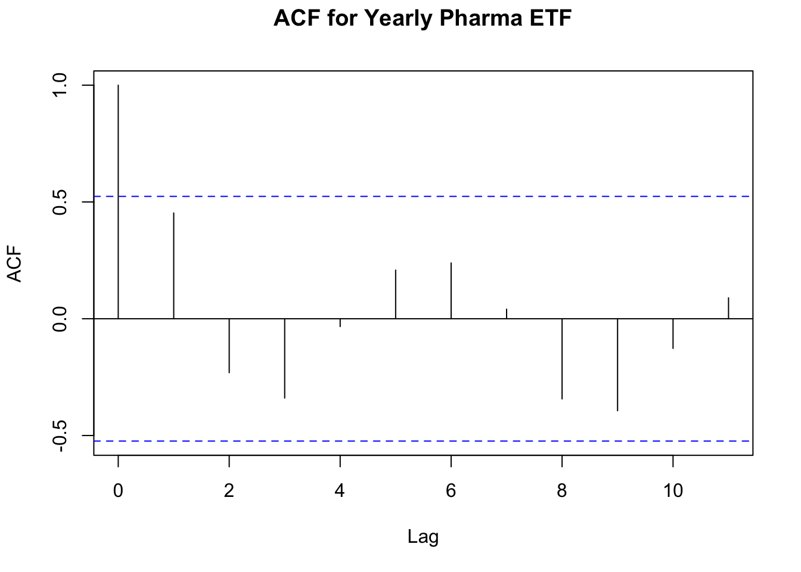
pacf(pharma.yearly.ts, main = "PACF for Yearly Pharma ETF")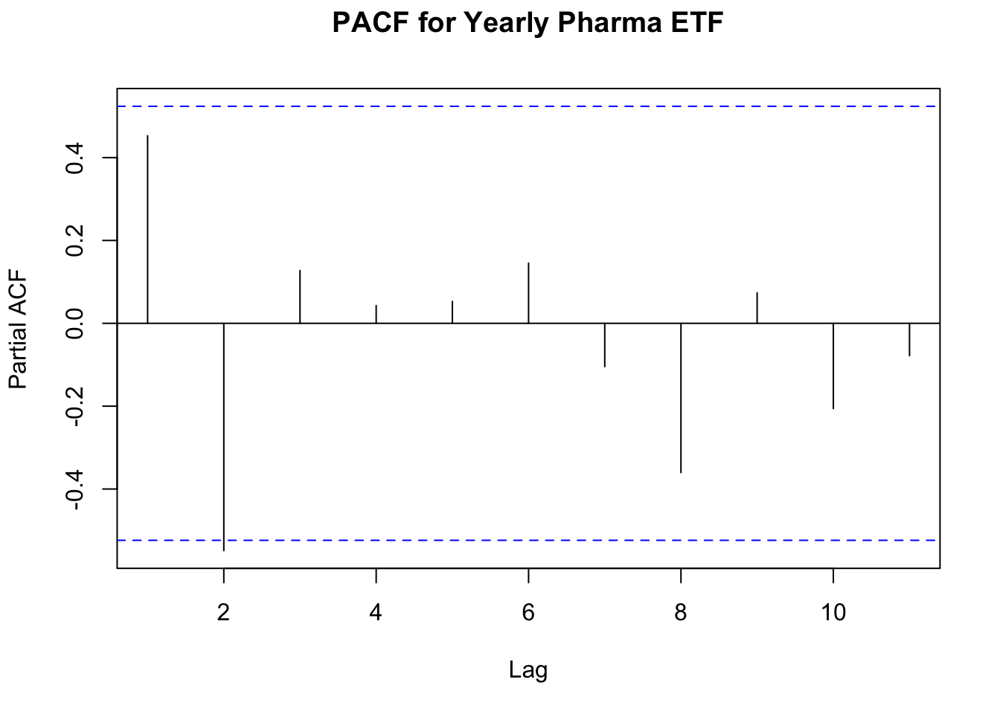
acf(drug.window.ts, main = "ACF for Yearly Drug Cost")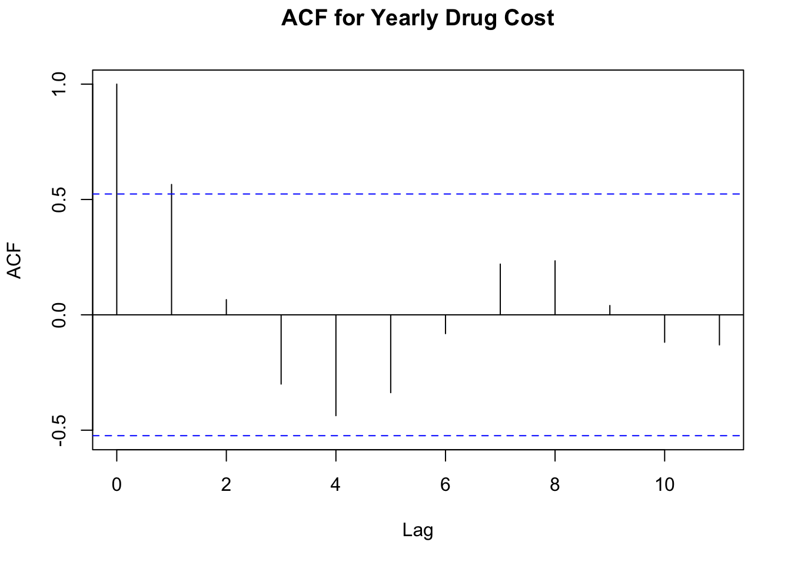
pacf(drug.window.ts, main = "PACF for Yearly Drug Cost")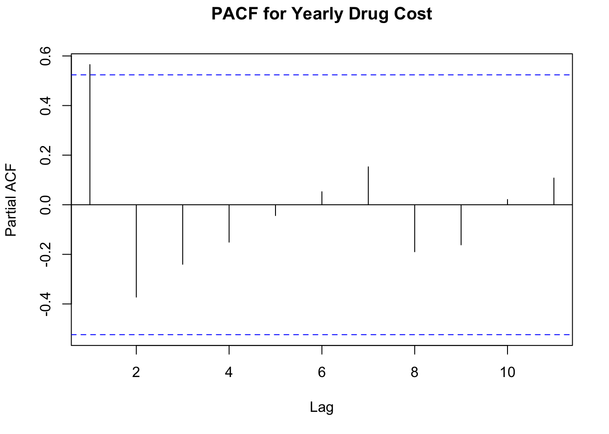
Next, I want to find the optimal number of lags to use for the combined model. To do this, I will use VARselect().
I will fit two different models here. Because the original out-of-pocket drug cost dataset required detrending, I will fit one model with a type of “both”, which takes into account detrending, and one model with a type of “constant”, which ignores detrending.
According to the results for the “both” model variant, I should use 1 lag for the model, as that was the most frequent result from the different metrics.
library(vars)Loading required package: MASS
Attaching package: 'MASS'The following object is masked from 'package:plotly':
selectThe following object is masked from 'package:dplyr':
selectLoading required package: strucchangeLoading required package: sandwich
Attaching package: 'strucchange'The following object is masked from 'package:stringr':
boundaryLoading required package: urcaLoading required package: lmtest
Attaching package: 'vars'The following object is masked from 'package:tidyquant':
VARlibrary(astsa)
best.lag = VARselect(ts.combo, lag.max = 10, type = "both")
best.lag$selectionAIC(n) HQ(n) SC(n) FPE(n)
1 1 1 2 According to the results for the “constant” model variant, I should use two lags for the model.
best.lag = VARselect(ts.combo, lag.max = 10, type = "const")
best.lag$selectionAIC(n) HQ(n) SC(n) FPE(n)
2 2 2 1 Detrended Model
Now, I will build the first VAR model. Based on the results of the model, it seems like the only coefficient with any significant effect is the out-of-pocket drug cost of lag 1 on the original drug cost time series. None of the coefficients have an effect on the yearly pharmaceutical ETF time series.
var.model.1 = VAR(ts.combo, p = 1, type = "both", season = NULL, exogen = NULL)
summary(var.model.1)
VAR Estimation Results:
=========================
Endogenous variables: pharma.yearly.ts, drug.window.ts
Deterministic variables: both
Sample size: 13
Log Likelihood: -137.09
Roots of the characteristic polynomial:
0.5152 0.5152
Call:
VAR(y = ts.combo, p = 1, type = "both", exogen = NULL)
Estimation results for equation pharma.yearly.ts:
=================================================
pharma.yearly.ts = pharma.yearly.ts.l1 + drug.window.ts.l1 + const + trend
Estimate Std. Error t value Pr(>|t|)
pharma.yearly.ts.l1 4.894e-01 3.442e-01 1.422 0.189
drug.window.ts.l1 1.492e-05 1.525e-04 0.098 0.924
const 2.241e+01 1.990e+01 1.126 0.289
trend -1.497e-01 1.505e-01 -0.995 0.346
Residual standard error: 1.596 on 9 degrees of freedom
Multiple R-Squared: 0.3913, Adjusted R-squared: 0.1885
F-statistic: 1.929 on 3 and 9 DF, p-value: 0.1955
Estimation results for equation drug.window.ts:
===============================================
drug.window.ts = pharma.yearly.ts.l1 + drug.window.ts.l1 + const + trend
Estimate Std. Error t value Pr(>|t|)
pharma.yearly.ts.l1 -538.0175 447.8700 -1.201 0.2603
drug.window.ts.l1 0.5259 0.1985 2.650 0.0265 *
const 46537.3779 25898.5172 1.797 0.1059
trend -72.3526 195.8282 -0.369 0.7203
---
Signif. codes: 0 '***' 0.001 '**' 0.01 '*' 0.05 '.' 0.1 ' ' 1
Residual standard error: 2077 on 9 degrees of freedom
Multiple R-Squared: 0.6232, Adjusted R-squared: 0.4975
F-statistic: 4.961 on 3 and 9 DF, p-value: 0.02661
Covariance matrix of residuals:
pharma.yearly.ts drug.window.ts
pharma.yearly.ts 2.548 -814.9
drug.window.ts -814.879 4314693.2
Correlation matrix of residuals:
pharma.yearly.ts drug.window.ts
pharma.yearly.ts 1.0000 -0.2458
drug.window.ts -0.2458 1.0000Next, I am going to plot the ACFs of the residuals. Overall, the residuals look good and seem to resemble white noise.
par(mar=c(5,4,3,2)+0.1)
acf(residuals(var.model.1)[,1])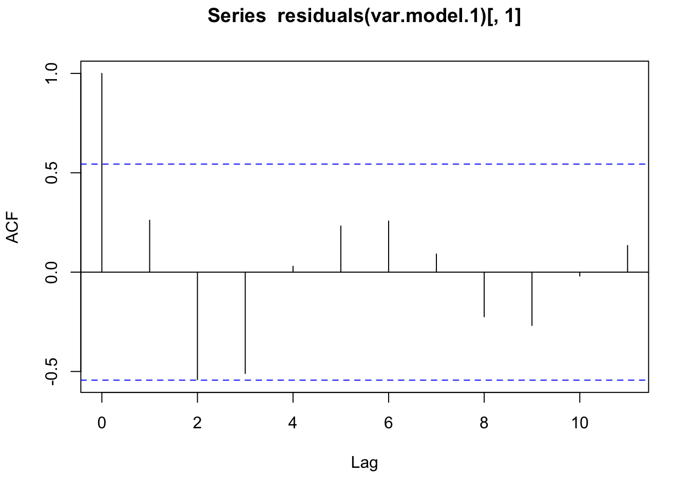
acf(residuals(var.model.1)[,2])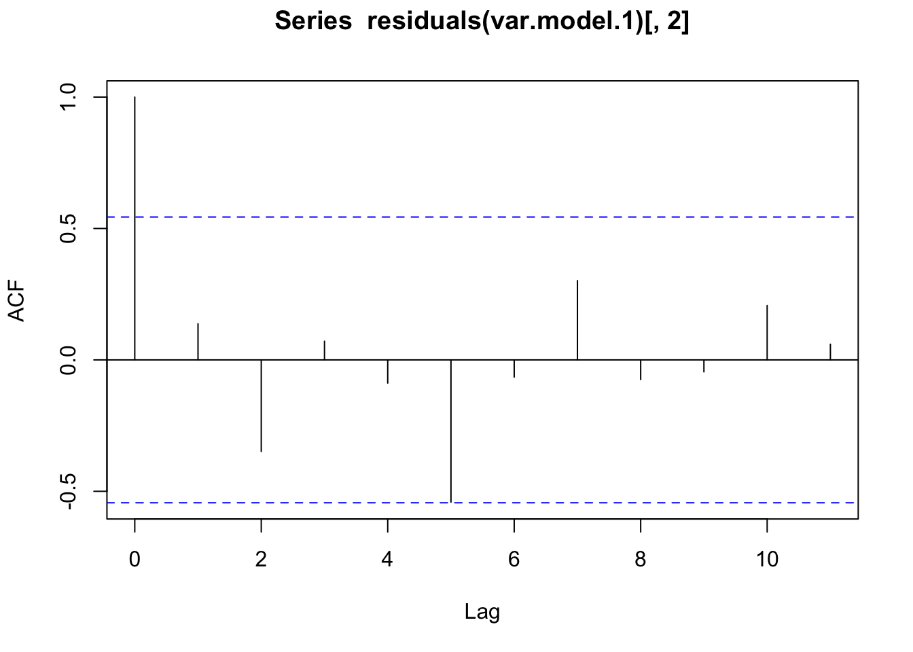
Constant Model
Now, I will build the second VAR model that does not take detrending into account to see if it performs any better than the first model. This model will take two lags into account as based on the results of VARselect() earlier.
Based on the results of the model, it looks like none of the coefficients have a significant effect on the drug time series. For the pharmaceutical time series, the 1st pharmaceutical ETF lag seems to have a relatively weak but still significant predictive effect.
var.model.2 = VAR(ts.combo, p = 2, type = "const", season = NULL, exogen = NULL)
summary(var.model.2)
VAR Estimation Results:
=========================
Endogenous variables: pharma.yearly.ts, drug.window.ts
Deterministic variables: const
Sample size: 12
Log Likelihood: -121.628
Roots of the characteristic polynomial:
0.8045 0.8045 0.6858 0.6858
Call:
VAR(y = ts.combo, p = 2, type = "const", exogen = NULL)
Estimation results for equation pharma.yearly.ts:
=================================================
pharma.yearly.ts = pharma.yearly.ts.l1 + drug.window.ts.l1 + pharma.yearly.ts.l2 + drug.window.ts.l2 + const
Estimate Std. Error t value Pr(>|t|)
pharma.yearly.ts.l1 0.7606126 0.3025707 2.514 0.0402 *
drug.window.ts.l1 -0.0001477 0.0002754 -0.536 0.6083
pharma.yearly.ts.l2 -0.7889308 0.3650763 -2.161 0.0675 .
drug.window.ts.l2 0.0001992 0.0001885 1.057 0.3257
const 42.1004468 24.6802485 1.706 0.1318
---
Signif. codes: 0 '***' 0.001 '**' 0.01 '*' 0.05 '.' 0.1 ' ' 1
Residual standard error: 1.321 on 7 degrees of freedom
Multiple R-Squared: 0.6736, Adjusted R-squared: 0.487
F-statistic: 3.611 on 4 and 7 DF, p-value: 0.06673
Estimation results for equation drug.window.ts:
===============================================
drug.window.ts = pharma.yearly.ts.l1 + drug.window.ts.l1 + pharma.yearly.ts.l2 + drug.window.ts.l2 + const
Estimate Std. Error t value Pr(>|t|)
pharma.yearly.ts.l1 -274.2096 438.9946 -0.625 0.5520
drug.window.ts.l1 0.7732 0.3996 1.935 0.0942 .
pharma.yearly.ts.l2 -84.0652 529.6828 -0.159 0.8784
drug.window.ts.l2 -0.3646 0.2735 -1.333 0.2242
const 43933.6357 35808.1408 1.227 0.2595
---
Signif. codes: 0 '***' 0.001 '**' 0.01 '*' 0.05 '.' 0.1 ' ' 1
Residual standard error: 1917 on 7 degrees of freedom
Multiple R-Squared: 0.6082, Adjusted R-squared: 0.3843
F-statistic: 2.717 on 4 and 7 DF, p-value: 0.1178
Covariance matrix of residuals:
pharma.yearly.ts drug.window.ts
pharma.yearly.ts 1.746 5.185e+01
drug.window.ts 51.854 3.675e+06
Correlation matrix of residuals:
pharma.yearly.ts drug.window.ts
pharma.yearly.ts 1.00000 0.02047
drug.window.ts 0.02047 1.00000Next, I am going to plot the ACFs of the residuals. Overall, the residuals look good and seem to resemble white noise.
par(mar=c(5,4,3,2)+0.1)
acf(residuals(var.model.1)[,1])acf(residuals(var.model.1)[,2])Next, I will look at the cross correlation matrix. There seems to be white noise here as well.
par(mar=c(5,4,3,2)+0.1)
acf(residuals(var.model.2)[,1])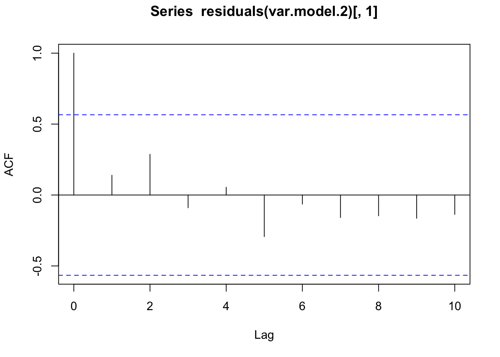
acf(residuals(var.model.2)[,2])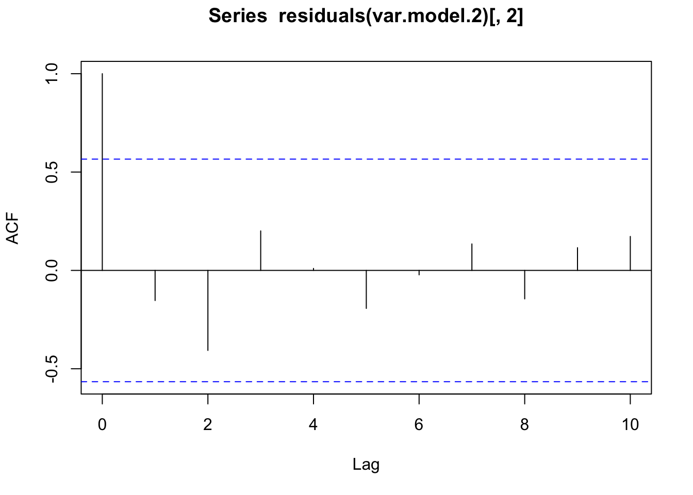
Now, I am going to perform cross-validation to determine which of the two VAR models tested above has the lowest RMSE.
I will start by splitting the combined time series into training and testing components.
combo.train = window(ts.combo, end = c(2019,1))
combo.test = window(ts.combo, start = c(2020,1))Next, I will perform the cross-validation. The RMSE values for the two models can be seen below.
for (i in 10){
train.var.1 = VAR(combo.train, p = 1, type = "both")
train.var.2 = VAR(combo.train, p = 2, type = "const")
var.pred.1 = predict(train.var.1, n.ahead = length(combo.test))
var.pred.2 = predict(train.var.2, n.ahead = length(combo.test))
model1.fpharma = var.pred.1$fcst$pharma.yearly.ts
model1.fdrug = var.pred.1$fcst$drug.window.ts
model1.fdf = data.frame(model1.fpharma[,1], model1.fdrug[,1])
model2.fpharma = var.pred.2$fcst$pharma.yearly.ts
model2.fdrug = var.pred.2$fcst$drug.window.ts
model2.fdf = data.frame(model2.fpharma[,1], model2.fdrug[,1])
# pred.rmse.1 = accuracy(var.pred.1$fcst, combo.test)[2]
# pred.rmse.2 = accuracy(var.pred.2$fcst, combo.test)[2]
print(paste0("RMSE for Detrended Model: ", round(pred.rmse.1,2)))
print(paste0("RMSE for Constant Model: ", round(pred.rmse.2,2)))(Still need to figure this out)
Finally, using the results of the VAR model, I am going to forecast two years into the future.
The results of the first, detrended model are below.
(pred.var.1 = predict(var.model.1, n.ahead = 2, ci = 0.95)) # 2 yrs ahead$pharma.yearly.ts
fcst lower upper CI
[1,] 40.59175 37.46335 43.72015 3.128397
[2,] 40.60159 37.12467 44.07851 3.476924
$drug.window.ts
fcst lower upper CI
[1,] 48195.52 44124.31 52266.72 4071.206
[2,] 48889.03 43813.19 53964.87 5075.840fanchart(pred.var.1)
The results of the second, constant model are below.
(pred.var.2 = predict(var.model.2, n.ahead = 2, ci = 0.95)) # 2 yrs ahead$pharma.yearly.ts
fcst lower upper CI
[1,] 43.25170 40.66220 45.84121 2.589507
[2,] 45.40174 42.10808 48.69541 3.293665
$drug.window.ts
fcst lower upper CI
[1,] 47668.46 43911.40 51425.53 3757.070
[2,] 48598.39 43805.37 53391.42 4793.026fanchart(pred.var.2)